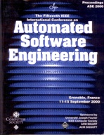

Pierre Flener's Research Publications & Edited Volumes
|  |
(my publications at ORCID) (my publications at DBLP) (my publications & citations at Google Scholar)
Books | Refereed Journal Papers | Refereed Conference Papers | Refereed Invited Papers | Refereed Chapters in Books | Edited Refereed Collections | Refereed Workshop Papers | (Yet) Unpublished / Unfinished Papers | PhD and MSc theses
Please note: The material below is provided for your
personal use only and may not be retransmitted or redistributed
without permission in writing from a paper's publisher and/or
authors.
You may not upload this material to any public server,
on-line service, network, or bulletin board without prior written
permission from the publisher and/or authors.
You may not make
copies for any commercial purpose. This material is not public
domain. Reproduction or storage of materials retrieved from this web
site are subject to Copyright Law.
If you cannot access the
official version of a paper, then contact
me for a pre-print.
Books
[Fle95a]
P. Flener.
Logic Program Synthesis from Incomplete Information.
Kluwer Academic Publishers, 1995. ISBN 0-7923-9532-8.
(Book Announcement)
Refereed Journal Papers
[FCFFPY24]
K. Forghani, M. Carlsson, P. Flener, M. Fredriksson, J. Pearson, and
D. Yuan.
Maximizing value yield in wood industry through flexible
sawing and product grading based on wane and log shape.
Computers and Electronics in Agriculture, 216:108513,
January 2024.
(PDF, open access)
[WCSFPM23]
J. L. Wessén, M. Carlsson, Ch. Schulte, P. Flener, F. Pecora,
and M. Matskin.
A constraint programming model for the scheduling and workspace layout
design of a dual-arm multi-tool assembly robot.
Constraints, 28:71-104, June 2023.
(PDF, open access)
[DBCFM17]
J. J. Dekker, G. Björdal, M. Carlsson, P. Flener, and J.-N. Monette.
Auto-tabling for subproblem presolving in MiniZinc.
Constraints, journal fast track of CP-AI-OR 2017,
22(4):512-529, October 2017.
(PDF, open access)
[Abstract in: D. Salvagnin and M. Lombardi (editors), CP-AI-OR 2017.
Lecture Notes in Computer Science, volume 10335, page XV. Springer, 2017.]
[MBFP16]
J.-N. Monette, N. Beldiceanu, P. Flener, and J. Pearson.
A parametric propagator for pairs of sum constraints with a discrete convexity property.
Artificial Intelligence, 241:170-190, December 2016.
(PDF)
(Preprint)
(Software)
[BMFP15]
G. Björdal, J.-N. Monette, P. Flener, and J. Pearson.
A constraint-based local search backend for MiniZinc.
Constraints, journal fast track of CP-AI-OR 2015, 20(3):325-345, July 2015.
(PDF)
(Preprint)
(Software)
[Abstract in: L. Michel (editor), CP-AI-OR 2015.
Lecture Notes in Computer Science, volume 9075, page 18. Springer, 2015.]
[BFMPS14]
N. Beldiceanu, P. Flener, J.-N. Monette, J. Pearson, and H. Simonis.
Toward sustainable development in constraint programming.
Constraints, 19(2):139-149, April 2014.
(PDF)
(Preprint)
[HFP13a]
J. He, P. Flener, and J. Pearson.
Underestimating the cost of a soft constraint is dangerous:
Revisiting the edit-distance based SoftRegular constraint.
Journal of Heuristics, 19(5):729–756, October 2013.
(PDF)
(Preprint)
[BCFP13b]
N. Beldiceanu, M. Carlsson, P. Flener, and J. Pearson.
On matrices, automata, and double counting in constraint programming.
Constraints, 18(1):108-140, January 2013.
(PDF)
(Preprint)
[BCFP13a]
N. Beldiceanu, M. Carlsson, P. Flener, and J. Pearson.
On the reification of global constraints.
Constraints, 18(1):1-6, January 2013.
(PDF)
(Preprint)
(summarises Technical Report T2012:02)
[ABFP12]
C. Allignol, N. Barnier, P. Flener, and J. Pearson.
Constraint programming for air traffic management: A survey.
Knowledge Engineering Review, 27(3):361-392, September 2012.
(PDF)
[SBFP12]
K. Sundequist Blomdahl, P. Flener, and J. Pearson.
Contingency plans for air traffic flow and capacity management using
constraint programming.
Journal of Aerospace Operations, 1(3):249-266, March 2012.
(PDF)
(Preprint)
[HFP11]
J. He, P. Flener, and J. Pearson.
An automaton constraint for local search.
Fundamenta Informaticae, 107(2-3):223-248, 2011.
(PDF)
(Preprint)
[FPSVÅ09]
P. Flener, J. Pearson, M. Sellmann, P. Van Hentenryck, and M. Ågren.
Dynamic structural symmetry breaking for constraint satisfaction problems.
Constraints, 14(4):506-538, December 2009.
(PDF)
(Preprint)
(omitted material can be found in Technical Report 2007-032)
[FPS09]
P. Flener, J. Pearson, and M. Sellmann.
Static and dynamic structural symmetry breaking.
Annals of Mathematics and Artificial Intelligence,
57(1):37-57, September 2009.
(PDF)
(supersedes Technical Report 2008-023)
[FP09]
P. Flener and J. Pearson.
Solving necklace constraint problems.
Journal of Algorithms, 64(2-3):61-73, April-July 2009.
(PDF)
[FCS09]
P. Flener, M. Carlsson, and C. Schulte.
Constraint programming in Sweden.
IEEE Intelligent Systems 24(2):87-89, March/April 2009.
(PDF)
[ÅFP09]
M. Ågren, P. Flener, and J. Pearson.
Revisiting constraint-directed search.
Information and Computation 207(3):438-457, March 2009.
(PDF)
[BFL08]
N. Beldiceanu, P. Flener, and X. Lorca.
Combining tree partitioning, precedence, and incomparability constraints.
Constraints 13(4):459-489, December 2008.
(PDF)
(Preprint)
(supersedes Technical Report 2006-020)
[SFP08]
O. Sivertsson, P. Flener, and J. Pearson.
A lower bound on the overlap of same-sized sets.
Annals of Combinatorics 12(3):347-352, October 2008.
(PDF)
[FS08]
P. Flener and U. Schmid.
An introduction to inductive programming.
Artificial Intelligence Review, 29(1):45-62, March 2008.
(PDF)
[FPÅGCD07a]
P. Flener, J. Pearson, M. Ågren, C. Garcia Avello, M. Celiktin, and S. Dissing.
Air-traffic complexity resolution in multi-sector planning.
Journal of Air Transport Management 13(6):323-328, November 2007.
(PDF)
(summarises Technical Report 2007-003)
[ÅFP07]
M. Ågren, P. Flener, and J. Pearson.
Generic incremental algorithms for local search.
Constraints 12(3):293-324, September 2007 (Special Issue on Local Search Techniques for Constraint Satisfaction).
(PDF)
(Preprint)
[FPRS07]
P. Flener, J. Pearson, L.G. Reyna, and O. Sivertsson.
Design of financial CDO squared transactions using constraint programming.
Constraints 12(2):179-205, April 2007.
(PDF)
(Preprint)
[FP01a]
P. Flener and D. Partridge.
Inductive Programming.
Automated Software Engineering 8(2):131-137, April 2001
(Special Issue on Inductive Programming).
(PDF)
(Preprint)
[FLOR00]
P. Flener, K.-K. Lau, M. Ornaghi, and J. Richardson.
An abstract formalisation of correct schemas for program synthesis.
Journal of Symbolic Computation 30(1):93-127, July 2000
(Special Issue on Schemas).
(PDF)
(Preprint)
[FY99]
P. Flener and S. Yilmaz.
Inductive synthesis of recursive logic programs: Achievements and prospects.
Journal of Logic Programming 41(2-3):141-195,
November/December 1999 (Special Issue on Synthesis,
Transformation, and Analysis).
(PDF)
(Preprint)
[EF99]
E. Erdem and P. Flener.
Completing open logic programs by constructive induction.
International Journal of Intelligent Systems 14(10):995-1019, October 1999.
(PDF)
(Preprint)
[LCF98]
B. Le Charlier and P. Flener.
Specifications are necessarily informal,
or: Some more myths of formal methods.
Journal of Systems and Software 40(3):275-296, March 1998 (Special Issue on Formal Methods Technology Transfer).
(PDF)
(Preprint)
[FD93a]
P. Flener and Y. Deville.
Logic program synthesis from incomplete specifications.
Journal of Symbolic Computation 15(5-6):775-805, May/June 1993 (Special Issue on Automatic Programming).
(PDF)
(Preprint)
Refereed Conference Papers
[BFPST20]
G. Björdal, P. Flener, J. Pearson, P. J. Stuckey, and G. Tack.
Solving satisfaction problems using large-neighbourhood search.
In: H. Simonis (editor), CP 2020.
Lecture Notes in Computer Science, volume 12333, pages 55-71. Springer, 2020.
(PDF)
(Preprint)
(3-minute teaser, followed by 17-minute talk, starting at 03:00)
[BFPS19]
G. Björdal, P. Flener, J. Pearson, and P. J. Stuckey.
Exploring declarative local-search neighbourhoods with constraint programming.
In: T. Schiex and S. de Givry (editors), CP 2019.
Lecture Notes in Computer Science, volume 11802, pages 37-52. Springer, 2019.
(PDF)
(Preprint)
[BFP19]
G. Björdal, P. Flener, and J. Pearson.
Generating compound moves in local search by hybridisation with complete search.
In: L.-M. Rousseau and K. Stergiou (editors), CP-AI-OR 2019.
Lecture Notes in Computer Science, volume 11494, pages 95-111. Springer, 2019.
(PDF)
(Preprint)
[BFPST18]
G. Björdal, P. Flener, J. Pearson, P.J. Stuckey, and G. Tack.
Declarative local-search neighbourhoods in MiniZinc.
In: M. Alamaniotis, J.-M. Lagniez, and A. Lallouet (editors),
ICTAI 2018.
IEEE Computer Society, 2018.
(PDF)
(Preprint)
[FFP17]
M. A. Francisco Rodriguez, P. Flener, and J. Pearson.
Automatic generation of descriptions of time-series constraints.
In: M. Virvou, J.-M. Lagniez, and A. Lallouet (editors),
ICTAI 2017, pages 102-109.
IEEE Computer Society, 2017.
(PDF)
(Preprint)
[AFPSST17]
R. Amadini, P. Flener, J. Pearson, J. D. Scott, P. J. Stuckey, and G. Tack.
MiniZinc with strings.
In: M. Hermenegildo and P. Lopez-Garcia (editors), LOPSTR 2016, Revised Selected Papers.
Lecture Notes in Computer Science, volume 10184, pages 52-67. Springer, 2017.
(PDF)
(Preprint)
(superseded Pre-Proceedings version)
[SFPS17]
J. D. Scott, P. Flener, J. Pearson, and Ch. Schulte.
Design and implementation of bounded-length sequence variables.
In: D. Salvagnin and M. Lombardi (editors), CP-AI-OR 2017.
Lecture Notes in Computer Science, volume 10335, pages 51-67. Springer, 2017.
(PDF)
(Preprint)
[ABCFFPS16]
E. Arafailova, N. Beldiceanu, M. Carlsson, P. Flener, M. A. Francisco
Rodriguez, J. Pearson, and H. Simonis.
Systematic derivation of bounds and glue constraints for time-series
constraints.
In: M. Rueher (editor), CP 2016.
Lecture Notes in Computer Science, volume 9892, pages 13-29. Springer, 2016.
(PDF)
(Preprint)
[ABDFFPS16]
E. Arafailova, N. Beldiceanu, R. Douence, P. Flener, M. A. Francisco
Rodriguez, J. Pearson, and H. Simonis.
Time-series constraints: Improvements and application in CP and MIP
contexts.
In: C.-G. Quimper (editor), CP-AI-OR 2016.
Lecture Notes in Computer Science, volume 9676,
pages 18-34. Springer, 2016.
(PDF)
(Preprint)
[FFP15]
M. A. Francisco Rodríguez, P. Flener, and J. Pearson.
Implied constraints for AUTOMATON constraints.
In: G. Gottlob, G. Sutcliffe, and A. Voronkov (editors),
GCAI 2015.
EasyChair Proceedings in Computing, volume 36, pages 113-126, 2015.
(PDF)
[BCFLP15]
N. Beldiceanu, M. Carlsson, P. Flener, X. Lorca, J. Pearson,
T. Petit, and Ch. Prud'homme.
A modelling pearl with sortedness constraints.
In: G. Gottlob, G. Sutcliffe, and A. Voronkov (editors),
GCAI 2015.
EasyChair Proceedings in Computing, volume 36, pages 27-41, 2015.
(PDF)
[MFP15]
J.-N. Monette, P. Flener, and J. Pearson.
Automated auxiliary variable elimination through on-the-fly
propagator generation.
In: G. Pesant (editor), CP 2015.
Lecture Notes in Computer Science, volume 9255,
pages 313-329. Springer, 2015.
(PDF)
(Preprint)
(Software)
[SFP15]
J. D. Scott, P. Flener, and J. Pearson.
Constraint solving with bounded string variables.
In: L. Michel (editor), CP-AI-OR 2015.
Lecture Notes in Computer Science, volume 9075,
pages 375-392. Springer, 2015.
(PDF)
(Preprint)
[BCFFP14]
N. Beldiceanu, M. Carlsson, P. Flener, M. A. Francisco Rodriguez, and J. Pearson.
Linking prefixes and suffixes for constraints encoded using automata with accumulators.
In: B. O'Sullivan (editor), CP 2014.
Lecture Notes in Computer Science, volume 8656,
pages 142-157. Springer, 2014.
(PDF)
(Preprint)
[MFP14]
J.-N. Monette, P. Flener, and J. Pearson.
A propagator design framework for constraints over sequences.
In: C. E. Brodley and P. Stone (editors), AAAI 2014, pages 2710-2716.
AAAI Press, 2014.
(PDF)
(Preprint)
(Appendix)
[BFPVH14]
N. Beldiceanu, P. Flener, J. Pearson, and P. Van Hentenryck.
Propagating regular counting constraints.
In: C. E. Brodley and P. Stone (editors), AAAI 2014, pages 2616-2622.
AAAI Press, 2014.
(PDF)
(Preprint)
[FFP13]
M. A. Francisco Rodriguez, P. Flener, and J. Pearson.
Generation of implied constraints for automaton-induced decompositions.
In: A. Brodsky (editor),
ICTAI 2013, pages 1076-1083.
IEEE Computer Society, 2013.
(PDF)
(Preprint)
(Slides)
[SFP13]
J. D. Scott, P. Flener, and J. Pearson.
Bounded strings for constraint programming.
In: A. Brodsky (editor),
ICTAI 2013, pages 1036-1043.
IEEE Computer Society, 2013.
(PDF)
(Preprint)
[HFP13b]
J. He, P. Flener, and J. Pearson.
Solving string constraints: The case for constraint programming.
In: Ch. Schulte (editor), CP 2013.
Lecture Notes in Computer Science, volume 8124,
pages 381-397. Springer, 2013.
(PDF)
(Preprint)
(Software)
[MBFP13]
J.-N. Monette, N. Beldiceanu, P. Flener, and J. Pearson.
A parametric propagator for discretely convex pairs of sum constraints.
In: Ch. Schulte (editor), CP 2013.
Lecture Notes in Computer Science, volume 8124,
pages 529-544. Springer, 2013.
(PDF)
(Preprint)
(Software)
(superseded by the Artificial Intelligence paper in 2016)
[HBFNP13]
F. Hassani Bijarbooneh, P. Flener, E. Ngai, and J. Pearson.
Optimising quality of information in data collection for mobile sensor networks.
In: X. Gu and H. Wang (editors),
IWQoS 2013, the 21st IEEE/ACM International Symposium on Quality
of Service, pages 163-172.
IEEE Communications Society, 2013.
(PDF)
(Preprint)
[JFP13]
P. Jägare, P. Flener, and J. Pearson.
Airspace sectorisation using constraint-based local search.
In: S. Saunders-Hodge and C. Meckiff (editors),
ATM 2013, the 10th USA/Europe Seminar on Air Traffic Management R&D. Chicago, Illinois, USA, 2013.
(PDF)
Best
Paper Award of theme: Network and Strategic Traffic Flow Optimisation
[MFP12]
J.-N. Monette, P. Flener, and J. Pearson.
Towards solver-independent propagators.
In: M. Milano (editor), CP 2012.
Lecture Notes in Computer Science, volume 7514,
pages 544-560. Springer, 2012.
(PDF)
(Preprint)
(Software)
French translation, Des propagateurs indépendants des solveurs, in: Ch. Truchet (editor): JFPC 2013, les 9ièmes Journées Francophones de Programmation par Contraintes, pages 227–236.
(PDF)
(Slides)
[HBFNP12]
F. Hassani Bijarbooneh, P. Flener, E. Ngai, and J. Pearson.
An optimisation-based approach for wireless sensor deployment in mobile sensing environments.
In: P. Duhamel and P. Lorenz (editors),
WCNC 2012, the 10th IEEE Wireless Communications and
Networking Conference, pages 199-209.
IEEE Communications Society, 2012.
(PDF)
(Preprint)
[HFP12]
J. He, P. Flener, and J. Pearson.
Solution neighbourhoods for constraint-directed local search.
In: S. Bistarelli, E. Monfroy, and B. O'Sullivan (editors),
SAC/CSP 2012, the track on Constraint Solving and
Programming of the 27th ACM Symposium on Applied Computing.
ACM Press, 2012.
(PDF)
(Preprint)
[MFP12]
T. Mancini, P. Flener, and J. Pearson.
Combinatorial problem solving over relational databases: View synthesis through
constraint-based local search.
In: S. Bistarelli, E. Monfroy, and B. O’Sullivan (editors),
SAC/CSP 2012, the track on Constraint Solving and
Programming of the 27th ACM Symposium on Applied Computing.
ACM Press, 2012.
(PDF)
(Preprint)
[HBFNP11]
F. Hassani Bijarbooneh, P. Flener, E. Ngai, and J. Pearson.
Energy-efficient task-mapping for data-driven sensor network macroprogramming using constraint programming.
In: R. Dell and K. Wood (editors),
ICS 2011, the 12th INFORMS Computing Society Conference, pages 199-209.
INFORMS Computing Society, 2011.
(PDF, open access)
[SBFP10b]
K. Sundequist Blomdahl, P. Flener, and J. Pearson.
Contingency plans for air traffic flow and capacity management.
In: D. Schaefer (editor),
INO 2010, the 9th EuroControl Innovative Research
Workshop & Exhibition, 2010. ISBN 978-2-87497-021-4.
(Preprint)
(superseded by the Journal of Aerospace Operations paper in 2012)
[SBFP10a]
K. Sundequist Blomdahl, P. Flener, and J. Pearson.
Contingency plans for air traffic management.
In: D. Cohen (editor), CP 2010.
Lecture Notes in Computer Science, volume 6308,
pages 643-657. Springer, 2010.
(PDF)
(Preprint) (superseded by the Journal of Aerospace Operations paper in 2012)
[BCFP10]
N. Beldiceanu, M. Carlsson, P. Flener, and J. Pearson.
On matrices, automata, and double counting.
In: A. Lodi, M. Milano, and P. Toth (editors), CP-AI-OR 2010.
Lecture Notes in Computer Science, volume 6140,
pages 10-24. Springer, 2010.
(PDF)
(superseded by the Constraints paper in 2013)
[FP08]
P. Flener and J. Pearson.
Solving necklace constraint problems.
In: M. Ghallab et al. (editors),
ECAI 2008, pages 520-524.
IOS Press, 2008.
(PDF)
(Preprint)
(superseded by the Journal of Algorithms paper in 2009)
[FPÅGCD07b]
P. Flener, J. Pearson, M. Ågren, C. Garcia Avello, M. Celiktin, and S. Dissing.
Air-traffic complexity resolution in multi-sector planning using constraint programming.
In: Ch. Pusch and S. Saunders-Hodge (editors),
ATM 2007, the 7th USA/Europe R&D Seminar on Air Traffic Management. Barcelona, Spain, July 2007.
(PDF)
(Preprint)
(slightly shorter version with permission in the JATM journal, November 2007)
(summarises Technical Report 2007-003)
[FPSVÅ07]
P. Flener, J. Pearson, M. Sellmann, P. Van Hentenryck, and M. Ågren.
Efficient structural symmetry breaking for constraint satisfaction problems.
In: I.P. Gent and S. Linton (editors),
International Symmetry Conference. Edinburgh, UK, 2007.
(Preprint)
[Fle06]
P. Flener.
Realism in project-based software engineering courses: Rewards, risks, and recommendations.
In: A. Levi, E. Savas, H. Yenigün, S. Balcisoy, and Y. Saygin (editors),
ISCIS 2006.
Lecture Notes in Computer Science, volume 4263,
pages 1031-1039. Springer, 2006.
(PDF) (supersedes Technical Report 2003-060)
(Preprint)
[FPSV06]
P. Flener, J. Pearson, M. Sellmann, and P. Van Hentenryck.
Static and dynamic structural symmetry breaking.
In: F. Benhamou (editor), CP 2006.
Lecture Notes in Computer Science, volume 4204,
pages 695-699. Springer, 2006.
(PDF)
(Preprint)
(superseded by the Annals of Mathematics and Artificial Intelligence paper in 2009)
[ÅFP06]
M. Ågren, P. Flener, and J. Pearson.
Inferring variable conflicts for local search.
In: F. Benhamou (editor), CP 2006.
Lecture Notes in Computer Science, volume 4204,
pages 665-669. Springer, 2006.
(PDF)
(Preprint)
(superseded by the Constraints paper in September 2007)
(summarises Technical Report 2006-005)
[BFL06]
N. Beldiceanu, P. Flener, and X. Lorca.
Partitionnement de graphes par des arbres sous contraintes de degré.
In: L. Henocque (editor), JFPC 2006, 2006.
(PDF)
(Preprint)
[ÅFP05b]
M. Ågren, P. Flener, and J. Pearson.
Incremental algorithms for local search from second-order logic.
In: P. van Beek (editor), CP 2005.
Lecture Notes in Computer Science, volume 3709,
pages 47-61. Springer, 2005.
(PDF)
(Preprint)
(superseded by the Constraints paper in September 2007)
[VFPÅ05]
P. Van Hentenryck, P. Flener, J. Pearson, and M. Ågren.
Compositional derivation of symmetries for constraint satisfaction.
In: J.-D. Zucker and L. Saitta (editors), SARA 2005.
Lecture Notes in Artificial Intelligence, volume 3607,
pages 234-247. Springer, 2005.
(PDF)
(Preprint)
(supersedes Technical Report 2004-022)
[ÅFP05a]
M. Ågren, P. Flener, and J. Pearson.
Set variables and local search.
In: R. Bartak and M. Milano (editors), CP-AI-OR 2005.
Lecture Notes in Computer Science, volume 3524,
pages 19-33. Springer, 2005.
(PDF)
(Preprint)
(superseded by the Constraints paper in September 2007)
(supersedes Technical Report 2004-015)
[BFL05]
N. Beldiceanu, P. Flener, and X. Lorca.
The tree constraint.
In: R. Bartak and M. Milano (editors), CP-AI-OR 2005.
Lecture Notes in Computer Science, volume 3524,
pages 64-78. Springer, 2005.
(PDF)
(Preprint)
[FPR04]
P. Flener, J. Pearson, and L.G. Reyna.
Financial portfolio optimisation.
In: M.G. Wallace (editor), CP 2004.
Lecture Notes in Computer Science, volume 3258,
pages 227-241. Springer, 2004.
(PDF)
(Preprint)
(superseded by the Constraints paper in April 2007)
[FPÅ04]
P. Flener, J. Pearson, and M. Ågren.
Introducing ESRA, a relational language for modelling combinatorial problems.
In: M. Bruynooghe (editor),
LOPSTR 2003, Revised Selected Papers.
Lecture Notes in Computer Science, volume 3018,
pages 214-232. Springer, 2004.
(PDF)
(Preprint).
Previous version with permission
in: A.M. Frisch (editor), Second Int'l Workshop on Modelling and Reformulating CSPs, held at CP 2003.
(Preprint)
Extended abstract with permission
in: M. Bruynooghe (editor), Pre-LOPSTR 2003, pages 239-254.
Technical Report CW 365 at Dept of Computer Science, KU Leuven, Belgium, 2003.
[VFPÅ03]
P. Van Hentenryck, P. Flener, J. Pearson, and M. Ågren.
Tractable symmetry breaking for CSPs with interchangeable values.
In IJCAI 2003, pages 277-282.
Morgan Kaufmann Publishers, 2003.
(PDF, open access)
(superseded by the Constraints paper in 2009)
[FFHKMPW02]
P. Flener, A.M. Frisch, B. Hnich, Z. Kiziltan, I. Miguel, J. Pearson,
and T. Walsh.
Breaking row and column symmetries in matrix models.
In: P. Van Hentenryck (editor), CP 2002.
Lecture Notes in Computer Science, volume 2470,
pages 462-476. Springer, 2002.
(PDF)
(Preprint)
Short version with permission
in: T. Vidal and P. Liberatore (editors), STAIRS 2002.
IOS Press, 2002.
(Preprint)
[KFH01]
Z. Kiziltan, P. Flener, and B. Hnich.
Towards inferring labelling heuristics for CSP application domains.
In: F. Baader, G. Brewka, and T. Eiter (editors), KI 2001.
Lecture Notes in Artificial Intelligence, volume 2174,
pages 275-289. Springer, 2001.
(PDF)
(Preprint)
[HF01]
B. Hnich and P. Flener.
High-level reformulation of constraint programs.
In: Ph. Codognet (editor), JFPLC 2001, pages 75-89.
Éditions Hermès, 2001.
(Preprint)
[FHK01a]
P. Flener, B. Hnich, and Z. Kiziltan.
Compiling high-level type constructors in constraint programming.
In: I.V. Ramakrishnan (editor), PADL 2001.
Lecture Notes in Computer Science, volume 1990,
pages 229-244. Springer, 2001.
(PDF)
(Preprint)
[FHK01b]
P. Flener, B. Hnich, and Z. Kiziltan.
A meta-heuristic for subset problems.
In: I.V. Ramakrishnan (editor), PADL 2001.
Lecture Notes in Computer Science, volume 1990,
pages 274-287. Springer, 2001.
(PDF)
(Preprint)
Previous version in: K.R. Apt, E. Monfroy, and F. Rossi (editors),
5th ERCIM/CompuLog Workshop on Constraint Programming, 2000.
(Preprint)
[FZH98]
P. Flener, H. Zidoum, and B. Hnich.
Schema-guided synthesis of constraint logic programs.
In: D.F. Redmiles and B. Nuseibeh (editors), ASE 1998, pages 168-176.
IEEE Computer Society Press, 1998.
(PDF)
(Preprint)
Extended abstract with permission
in: P. Flener (editor), LOPSTR 1998, Selected Papers.
Lecture Notes in Computer Science, volume 1559,
pages 309-312. Springer, 1999.
(PDF)
(Preprint)
and previous long version with permission
in: P. Flener and K.-K. Lau (editors), Pre-Proceedings of LOPSTR 1998.
Technical Report UMCS-98-6-1, University of Manchester, 1998.
(PDF)
(Preprint)
[BF98]
H. Büyükyildiz and P. Flener.
Generalised logic program transformation schemas.
In: N.E. Fuchs (editor), Logic Program Synthesis and Transformation: 7th International Workshop, LOPSTR 1997, Proceedings.
Lecture Notes in Computer Science, volume 1463,
pages 46-65. Springer, 1998.
(PDF)
(Preprint)
Extended abstract in: N. Fuchs (editor), Pre-Proceedings of LOPSTR 1997.
Technical Report CW 253 at Department of Computer Science, KU Leuven, Belgium, 1997.
[FLO98]
P. Flener, K.-K. Lau, and M. Ornaghi.
On correct program schemas.
In: N.E. Fuchs (editor), Logic Program Synthesis and Transformation: 7th International Workshop, LOPSTR 1997, Proceedings.
Lecture Notes in Computer Science, volume 1463,
pages 124-143. Springer, 1998.
(PDF)
(Preprint)
Extended abstract in: N. Fuchs (editor), Pre-Proceedings of LOPSTR 1997.
Technical Report CW 253 at Department of Computer Science, KU Leuven, Belgium, 1997.
[FLO97]
P. Flener, K.-K. Lau, and M. Ornaghi.
Correct-schema-guided synthesis of steadfast programs.
In: M. Lowry and Y. Ledru (editors), ASE 1997, pages 153-160.
IEEE Computer Society Press, 1997.
(PDF)
(Preprint)
[Fle97]
P. Flener.
Inductive logic program synthesis with DIALOGS.
In: S. Muggleton (editor), Inductive Logic Programming, 6th International Workshop, ILP 1996, Selected Papers.
Lecture Notes in Artificial Intelligence, volume 1314,
pages 175-198. Springer, 1997.
(PDF)
(Preprint)
Previous version in: S. Muggleton (editor), Pre-Proceedings of ILP 1996.
[FD96]
P. Flener and Y. Deville.
Logic program transformation through generalization schemata.
In: M. Proietti (editor), Logic Programming Synthesis and Transformation, 5th International Workshop, LOPSTR 1995, Proceedings.
Lecture Notes in Computer Science, volume 1048,
pages 171-173. Springer, 1996.
(PDF)
(Preprint)
Longer version in: M. Proietti (editor), Pre-Proceedings of LOPSTR 1995.
(Preprint)
[FP94]
P. Flener and L. Popelinsky.
On the use of inductive reasoning in program synthesis: Prejudice and prospects.
In: L. Fribourg and F. Turini (editors), Logic Programming Synthesis and Transformation -- Meta-Programming in Logic, 4th International Workshops, LOPSTR 1994 and META 1994, Proceedings.
Lecture Notes in Computer Science, volume 883,
pages 69-87. Springer, 1994.
(PDF)
(Preprint)
Extended abstract in: L. Fribourg (editor), Pre-Proceedings of LOPSTR 1994.
[Fle93a]
P. Flener.
Logic program synthesis from incomplete specifications.
In: L. Gün, R. Onvural, and E. Gelenbe (editors), ISCIS 1993, pages 363-370. 1993.
[FD92b]
P. Flener and Y. Deville.
Towards stepwise, schema-guided synthesis of logic programs.
In: T. Clement and K.-K. Lau (editors), Logic Program Synthesis and Transformation, LOPSTR 1991, International Workshop, pages 46-64.
Workshops in Computing, Springer, 1992.
(Preprint)
Extended abstract in: T. Clement and K.-K. Lau (editors), Pre-Proceedings of LOPSTR 1991.
Refereed Invited Papers
[FS23a]
P. Flener and U. Schmid.
Inductive programming.
Invited entry in: D. Phung, G. I. Webb, and C. Sammut (editors),
Encyclopedia of Machine Learning and Data Science.
Springer, 2023.
(PDF)
(version
of 2016)
(version of 2011)
[FS23b]
P. Flener and U. Schmid.
Programming by demonstration.
Invited entry in: D. Phung, G. I. Webb, and C. Sammut (editors),
Encyclopedia of Machine Learning and Data Science.
Springer, 2023.
(PDF)
(version
of 2016)
(version of 2011)
[FS23c]
P. Flener and U. Schmid.
Trace-based programming.
Invited entry in: D. Phung, G. I. Webb, and C. Sammut (editors),
Encyclopedia of Machine Learning and Data Science.
Springer, 2023.
(PDF)
(version of 2016)
(version of 2011)
[BDFHN04]
D. Basin, Y. Deville, P. Flener, A. Hamfelt, and J. Fischer Nilsson.
Synthesis of Programs in Computational Logic.
Invited chapter in: M. Bruynooghe and K.-K. Lau (editors),
Program Development in Computational Logic.
Lecture Notes in Computer Science, volume 3049,
pages 30-65. Springer, 2004.
(PDF)
(Preprint)
[Fle02a]
P. Flener.
Achievements and prospects of program synthesis.
Invited chapter in: A.C. Kakas and F. Sadri (editors),
Computational Logic: Logic Programming and Beyond;
Essays in Honour of Robert A. Kowalski.
Lecture Notes in Artificial Intelligence, volume 2407,
pages 310-346. Springer, 2002.
(PDF)
(Preprint)
[LCF97]
B. Le Charlier and P. Flener.
On the desirable link between theory and practice in abstract interpretation.
Invited paper in: P. Van Hentenryck (editor), SAS 1997.
Lecture Notes in Computer Science, volume 1302,
pages 379-387. Springer, 1997.
(PDF)
(Preprint)
Refereed Chapters in Books
[FD93b]
P. Flener and Y. Deville.
Synthesis of composition and discrimination operators for
divide-and-conquer logic programs.
In: J.-M. Jacquet (editor), Constructing Logic Programs, pages 67-96.
John Wiley and Sons, 1993.
(Preprint)
Edited Refereed Collections
[FPB12]
P. Flener, J. Pearson, and M. Bourgois (editors).
Special Issue on Constraint Programming for Air Traffic Management.
Knowledge Engineering Review, 27(3), September 2012.
(TOC)
(Call)
[FP10]
P. Flener and J. Pearson (editors).
Proceedings of SymCon 2010, the Tenth International Workshop on Symmetry in Constraint Satisfaction Problems. 2010.
(TOC)
[FN08]
P. Flener and Y. Naveh (editors).
Proceedings of LSCS 2008, the Fifth International Workshop on Local Search Techniques in Constraint Satisfaction. 2008.
(TOC)
[FS08]
P. Flener and H. Simonis (editors).
Proceedings of ModRef 2008, the Seventh International Workshop on Constraint Modelling and Reformulation. 2008.
(TOC)
[AF03]
P. Alexander and P. Flener (editors).
Special Issue on ASE 2000, the 15th IEEE international conference on Automated Software Engineering.
Automated Software Engineering 10(2), April 2003.
(TOC)
[FP02]
P. Flener and J. Pearson (editors).
Proceedings of SymCon 2002, the Second International Workshop on Symmetry in Constraint Satisfaction Problems. 2002.
(TOC)
[FP01c]
P. Flener and J. Pearson (editors).
Proceedings of SymCon 2001, the First International Workshop on Symmetry in Constraint Satisfaction Problems. 2001.
(TOC)
[FP01b]
P. Flener and D. Partridge (editors).
Special Issue on Inductive Programming.
Automated Software Engineering 8(2), April 2001.
(TOC)
(Call)
[FMT01]
P. Flener, A. Mili, and M.F. Tolba (editors).
Proceedings of AICCSA 2001, the 1st ACS / IEEE International Conference on Computer Systems and Applications.
IEEE Computer Society Press, 2001. ISBN 0-7695-1165-1.
(TOC)
[AF00]
P. Alexander and P. Flener (editors).
Proceedings of ASE 2000, the 15th IEEE international conference on Automated Software Engineering.
IEEE Computer Society Press, 2000. ISBN 0-7695-0710-7.
(TOC)
[FLB00]
P. Flener, K.-K. Lau, and W. Bibel (editors).
Special Issue on Schemas.
Journal of Symbolic Computation 30(1), July 2000.
(TOC)
(Call)
[Fle99]
P. Flener (editor),
Logic-Based Program Synthesis and Transformation: 8th International Workshop, LOPSTR 1998. Selected Papers.
Lecture Notes in Computer Science,
Volume 1559.
Springer, 1999. ISBN 3-540-65765-7.
[FL98]
P. Flener and K.-K. Lau (editors),
Pre-Proceedings of LOPSTR 1998.
Technical Report UMCS-98-6-1, University of Manchester, 1998.
(TOC)
Refereed Workshop Papers
[FFP11]
M. A. Francisco Rodriguez, P. Flener, and J. Pearson.
Consistency of constraint networks induced by automaton-based constraint specifications.
In: A. Rendl and Ch. Beck (editors),
ModRef 2011, the 10th International Workshop on Constraint Modelling and Reformulation, 2011.
(Preprint)
[MFP10]
T. Mancini, P. Flener, and J. Pearson.
Local search over relational databases.
In: Y. Deville and Ch. Solnon (editors),
LSCS 2010, the 7th International Workshop on Local
Search Techniques in Constraint Satisfaction, 2010.
(PDF)
(superseded by the SAC/CSP 2012 paper)
[HBFNP10]
F. Hassani Bijarbooneh, P. Flener, E. Ngai, and J. Pearson.
Energy-efficient task-mapping for data-driven sensor network macroprogramming using constraint programming.
In: T. Mancini and J. Pearson (editors),
ModRef 2010, the 9th International Workshop on Constraint Modelling and Reformulation, 2010.
(revised PDF) (superseded by the ICS 2011 paper)
[MFHMP09]
T. Mancini, P. Flener, A. Hossein Monshi, and J. Pearson.
Constrained optimisation over massive databases.
In: M. Gavanelli and T. Mancini (editors),
RCRA 2009, the 16th RCRA International
Workshop on Experimental Evaluation of Algorithms for Solving Problems
with Combinatorial Explosion, 2009.
(PDF)
(superseded by the SAC/CSP 2012 paper)
[HFP09]
J. He, P. Flener, and J. Pearson.
Toward an automaton constraint for local search.
In: Y. Deville and Ch. Solnon (editors),
LSCS 2009, the 6th International Workshop on Local Search Techniques in Constraint Satisfaction.
Electronic Proceedings in Theoretical Computer Science, Volume 5, pp. 13-25, 2009.
(PDF)
Also in: M. Gavanelli and T. Mancini (editors),
RCRA 2009, the 16th RCRA International
Workshop on Experimental Evaluation of Algorithms for Solving Problems
with Combinatorial Explosion, 2009.
(superseded by the Fundamenta Informaticae paper in 2011)
[HBFP09]
F. Hassani Bijarbooneh, P. Flener, and J. Pearson.
Dynamic demand-capacity balancing for air traffic management using constraint-based local search: First results.
In: Y. Deville and Ch. Solnon (editors),
LSCS 2009, the 6th International Workshop on Local Search Techniques in Constraint Satisfaction.
Electronic Proceedings in Theoretical Computer Science, Volume 5, pp. 27-40, 2009.
(PDF)
Also in: D. Schaefer (editor), INO 2009, the 8th
EuroControl Innovative Research Workshop & Exhibition, 2009.
(Preprint)
[ÅFP07]
M. Ågren, P. Flener, and J. Pearson.
Revisiting constraint-directed search.
In: Y. Naveh and A. Roli (editors),
LSCS 2007, the 4th International Workshop on Local Search Techniques in Constraint Satisfaction, 2007.
(Preprint)
(superseded by the Information and Computation paper in 2009)
[FFJHKMPW03]
P. Flener, A.M. Frisch, Ch. Jefferson, B. Hnich, Z. Kiziltan,
I. Miguel, J. Pearson, and T. Walsh.
Breaking symmetries in matrix models: A brief overview.
In ARW 2003, 2003.
(Postscript)
(Preprint)
[FP02]
P. Flener and J. Pearson.
Breaking all the symmetries in matrix models: Results, conjectures, and directions.
In: P. Flener and J. Pearson (editors), SymCon 2002,
the Second Int'l Workshop on Symmetry in CSPs, held at CP 2002.
(PDF)
[FFHKMW02]
P. Flener, A.M. Frisch, B. Hnich, Z. Kiziltan, I. Miguel, and T. Walsh.
Matrix modelling: Exploiting common patterns in constraint programming.
In: A.M. Frisch (editor), Int'l Workshop on Reformulating CSPs, held at CP 2002.
(Postscript)
(Preprint)
[Fle02b]
P. Flener.
Program synthesis for combinatorial optimisation problems: Position statement.
In: B. Fischer and D. Smith (editors),
Working Notes of the AAAI 2002 Spring Symposium on the State of the Art and Future Trends of Logic-based Program Synthesis.
(Preprint)
[FFHKMW01]
P. Flener, A. Frisch, B. Hnich, Z. Kiziltan, I. Miguel, and T. Walsh.
Matrix modelling.
In: P. Prosser (editor), Formul 2001, the CP 2001 Workshop on Modelling and Problem Formulation, 2001.
(Postscript)
(Preprint)
[FFHKMPW01]
P. Flener, A. Frisch, B. Hnich, Z. Kiziltan, I. Miguel, J. Pearson, and T. Walsh.
Symmetry in matrix models.
In: P. Flener and J. Pearson (editors), SymCon 2001,
the First Int'l Workshop on Symmetry in CSPs, held at CP 2001, pages 41-47.
(Preprint)
[Fle01]
P. Flener.
Towards relational modelling of combinatorial optimisation problems.
In: Ch. Bessière (editor),
IJCAI 2001 Workshop on Modelling and Solving Problems with Constraints.
(Postscript)
(Preprint)
[EF00]
E. Erdem and P. Flener.
A new declarative bias for ILP: Construction modes.
In: J. Cussens and A.M. Frisch (editors), Work-in-Progress Reports of ILP 2000.
CEUR Workshop Proceedings 35, 2000.
(Postscript)
(Preprint)
[FHK99]
P. Flener, B. Hnich, and Z. Kiziltan.
Towards schema-guided compilation of set constraint programs.
In: G. Rossi and B. Jayaraman (editors), DPS 1999, pages 59-66.
Technical Report 200, Mathematics Dept, University of Parma, Italy, 1999.
(Preprint)
[FR99]
P. Flener and J. Richardson.
A unified view of programming schemas and proof methods.
In: A. Bossi (editor), Pre-Proceedings of LOPSTR 1999, pages 75-82.
Technical Report CS-99-16, University of Venice, Italy, 1999.
(Preprint)
[FPS94]
P. Flener, L. Popelinsky, and O. Stepankova.
ILP and automatic programming: Towards three approaches.
In: S. Wrobel (editor), ILP 1994, pages 351-364.
GMD-Studien Nr.237, Sankt Augustin, Germany, September 1994.
(Preprint)
[FD92a]
P. Flener and Y. Deville.
SYNAPSE, a system for logic program synthesis from incomplete specifications.
In: M. Ducassé, Y.-J. Lin, and Ü. Yalcinalp (editors),
WLPE 1992, the Workshop on Logic Programming Environments,
pages 9-15, held at ICLP 1992. 1992.
(Preprint)
(Yet) Unpublished / Unfinished Papers
[ABCDFFPS16]
E. Arafailova, N. Beldiceanu, R. Douence, M. Carlsson, P. Flener, M. A. Francisco Rodríguez, J. Pearson, and H. Simonis.
Global Constraint Catalog, Volume II, Time-Series Constraints.
Computing Research Repository 1609.08925,
September 2016.
(PDF)
[FP14]
P. Flener and J. Pearson.
Propagators and Violation Functions for Geometric and Workload
Constraints Arising in Airspace Sectorisation.
Computing Research Repository 1401.7463,
January 2014.
(PDF)
[FP13]
P. Flener and J. Pearson.
Automatic airspace sectorisation: A survey.
Computing Research Repository 1311.0653,
November 2013.
(PDF)
[BFPVH13]
N. Beldiceanu, P. Flener, J. Pearson, and P. Van Hentenryck.
Propagating regular counting constraints.
Computing Research Repository 1309.7145,
September 2013.
(PDF)
[HRF03]
B. Hnich, J.D.C. Richardson, and P. Flener.
Towards automatic generation and evaluation of implied constraints.
Technical Report 2003-014 at Dept of Information Technology, Uppsala University, Sweden, 2003.
[RF03]
J.D.C. Richardson and P. Flener.
Program schemas as proof methods.
Technical Report 2003-008 at Dept of Information Technology, Uppsala University, Sweden, 2003.
[BF97]
H. Büyükyildiz and P. Flener.
Correctness proofs of transformation schemas.
Technical Report, Dept of CEIS, Bilkent University, Turkey, 1997.
(PDF)
[Fle95b]
P. Flener.
Predicate invention in inductive program synthesis.
Technical Report, Dept of CEIS, Bilkent University, Turkey, 1995.
(PDF)
PhD Thesis
[Fle93]
P. Flener.
Logic Algorithm Synthesis from Examples and Properties.
PhD Thesis, Department of Computer Science, Université Catholique de Louvain, Louvain-la-Neuve, Belgium, 1993.
Out of print. A revised version is [Fle95a] above.
(Abstract, PDF)
MSc Thesis
[FJ:88]
P. Flener and B. Jabas.
Contributions à l'étude des bases de données d'atelier logiciel.
MSc Thesis, Department of Computer Science, Université de Namur, Belgium, 1988.
Last modified: Thu Jun 20 16:20:48 CEST 2024